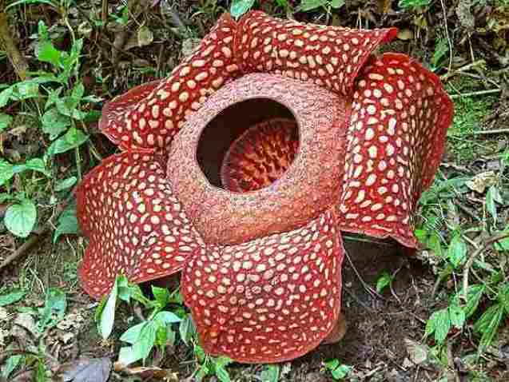

Flora & Fauna
Pengertian flora dan fauna secara sederhana flora adalah tanaman dan fauna adalah hewan. Sementara pengertian flora secara umum adalah segala jenis tumbuhan serta tanaman yang ada di muka bumi dan Fauna adalah segala jenis hewan yang hidup di muka bumi. Flora dan fauna memiliki jenis yang begitu banyak dan beragam hingga tidak lagi terhitung jumlahnya. Beragam hewan dan tumbuhan tersebut memiliki tempat tinggal yang beragam mulai di laut, atau bisa pula di darat.Flora endemik merupakan sekelompok jenis tumbuhan yang hidup pada suatu daerah tertentu. Ada flora jawa, flora daerah sumatera, flora endemik kalimantan dan lain-lain. Flora endemik pada suatu daerah biasanya memiliki jenis tertentu yang terkadang tidak bisa ditemukan di daerah lain atau mungkin jarang ditemukan. Hal ini dikarenakan pada tiap daerah memiliki tingkat kesuburan perbedaan iklim dan cuara serta jenis tanah yang berbeda satu dengan yang lain. Flora endemik di Jawa contohnya adalah bunga melati, flora endemik Papua adalah tanaman buah merah, flora endemik daerah Sumatera adalah rafllesia arnoldi atau bunga bangkai dan lain sebagainya.Tidak hanya pada flora, namun pada dunia hewan atau fauna juga memiliki kelompok yang berbeda pada tiap daerah. Contoh fauna endemik asli dari Papua adalah burung cendrawasih. Fauna asli dari Jawa adalah badak bercula satu dan fauna dari Sumatera adalah harimau sumatra. Fauna memiliki nama imbuhan geografis seperti hewan peralihan, hewan asia serta hewan australia.

Persebaran Flora dan Fauna
Di Indonesia penyebaran flora dan fauna asli Indonesia dipengaruhi oleh beragam hal seperti halnya aspek geografi. Para pakar zoologi berpendapat jika fauna di kawasan Indonesia memiliki tipe yang mirip dengan tipe fauna yang ada di Asia Tenggara atau oriental. Sementara itu fauna yang berada di kawasan Indonesia bagian timur memiliki kemiripan dengan fauna di benua Australia atau Australis.Di Indonesia daerah persebaran fauna dibedakan menjadi 3 kawasan yaitu Indonesia bagian barat, kawasan Indonesia bagian timur serta kawasan peralihan atau Wallace. Sementara itu, persebaran fauna di Indonesia dipisahkan oleh garis Lydekker dan garis Webeer.
Fauna
- Kawasan Indonesia bagian barat – Indonesia kawasan barat meliputi Kalimantan, Sumatera, Jawa dan Bali. Kawasan ini dibatasi oleh garis imajiner Wallace yang berada di antara Sulawesi dan Kalimantan serta di antara Lombok dan pulau Bali. Jenis fauna yang berasal dari Indonesia bagian barat antara lain adalah leopard atau macam tutul, harimau, orang utan, gajah, beruang madu, lutung, merak hijau, burung jalak bali, wau-wau, banteng, merak hijau serta badak jawa
- Kawasan peralihan – Daerah yang meliputi kawasan ini adalah Sulawesi, Maluku, Sumbawa, Sumba serta Lombok. Kawasan peralihan dibatasi oleh garis Lydekker yang berada di sebelah timur dan garis Wallace yang berada di sebelah barat. Di antara kedua garis pembatas ini terdapat garis weber sebagai garis keseimbangan yang terletak di sebelah timur pulau Sulawesi. Jenis hewan yang berada di kawasan ini antara lain adalah kupu-kupu sulawesi, kuskus, beruang, soa-soa, kakatua putih, burung rangkong, anoa dataran rendah, anoa pegunungan, komodo dan lain-lain.
- Kawasan Indonesia bagian timur – Kawasan ini dibatasi oleh garis Lydekker yang meliputi Papua serta pulau-pulau kecil yang berada di sekitarnya. Jenis fauna yang menghuni kawasan ini antara lain adalah kupu-kupu sayap burung, burung cendrawasih ekor pita, walabi kecil, kasturi raja, ular sanca hijau, burng kasuari gelambir ganda serta burung kakatua raja.
Flora
Adapun persebaran flora di Indonesia bagian barat, timur dan tengah yaitu:
- Flora bagian barat – Flora bagian barat memiliki jenis tumbuhan yang sangat beragam dan memiliki kawasan mangrove yang banyak di sekitar pantai. Hutan pada kawasan bagian barat ini selalu hijau dengan jenis kayu yang memiliki banyak manfaat bagi manusia.
- Flora bagian timur – Ciri flora yang terdapat di bagian timur adalah memiliki kemiripan dengan flora yang terdapat di benua Australia. Selain itu persebaran flora yang berada di timur lebih banyak tumbuh semak dan belukarnya. Flora yang khas dari wilayah ini adalah pohon matoa serta tanaman ficus famili beringin.
- Flora bagian tengah – Flora bagian tengah memiliki jenis hutan yang seragam karena hanya didominasi oleh satu jenis tumbuhan saja. Jenis tumbuhan yang paling banyak ditemukan di kawasan ini adalah cemara, pinus serta palma.
Upaya Melestarikan Flora dan Fauna
Seiring dengan berjalannya waktu, ada banyak sekali flora dan fauna yang mulai jarang bisa kita temui. Hal ini dikarenakan populasi mereka yang semakin sedikit dan akhirnya hilang sama sekali. Bukan hanya akibat faktor alam, namun juga akibat perburuan yang dilakukan oleh manusia. Manusia banyak memburu flora dan fauna yang ada untuk beragam jenis kepentingan seperti untuk makanan, untuk pengobatan atau bahkan untuk perhiasan. Bukan hanya itu, namun banyak juga melakukan pengerusakan habitat tempat tinggal flora maupun fauna sehingga dibutuhkan cara melestarikan flora dan fauna.
Dalam melakukan upaya pencegahan supaya flora dan fauna tidak mengalami kepunahan, maka diperlukan upaya-upaya berikut ini:
- Bangun tempat-tempat yang berguna untuk menjaga kelestarian alam supaya perkembangbiakan flora dan fauna tidak terganggu. Dalam hal ini pemerintah bisa menyediakan cagar alam di Indonesia bagi flora dan untuk mencegah kepunahan fauna pemerintah bisa menyediakan suaka margasatwa. Bukan hanya pemerintah namun masayarakat juga harus secara aktif berperan melindungi suaka margasatwa yang ada.
- Membangun prasarana yang digunakan sebagai pusat rehabilitasi serta tempat untuk melakukan penangkaran pada hewan-hewan tertentu.
- Pusat rehabilitasi bagi orang utan yang terdapat di Bahorok serta Tanjung Puting yang terdapat Sumatera
- Pusat rehabilitasi bagi babi rusa serta anoa yang tedapat di Sulawesi
- Dibuatnya daerah hutan Wanariset Samboja yang terdapat di Kutai, Kalimantan Timur
- Melakukan pembangunan yang peduli dengan alam. Dalam hal ini pembangunan yang dilakukan harus memperhatikan keseimbangan antara manusia serta lingkungan. Jangan sampai pembangunan yang kita lakukan merusak lingkungan dan berdampak buruk bagi keberlangsungan flora fauna yang ada.
- Pemerintah bisa menetapkan beragam jenis flora dan fauna yang dilindungi seperti kanguru pohon, bekantan, soa-soa atau yang kita kenal dengan biawak, badak, anoa, tapir, sarudung, owa, peusing, sing puar, siamang, bajing tanah, landak semut irian, orang utan, kelinci liar, menjangan, kabing hutan, ikan duyung gajah, macan dahan kuwuk, tapir dan lain-lain.
- Melakukan usaha dan cara menjaga kelestarian hutan seperti:
- Melakukan sistem tebang pilih
- Mencegah pencurian kayu serta serta mencegah terjadinya penebangan hutan secara liar. (baca : dampak penebangan hutan secara liar)
- Memperbaiki kondisi lingkungan hutan
- Melakukan reboisasi supaya hutan bisa kembali hijau
- Melestarikan hewan dengan cara :
- Melindungi hewan dari perburuan liar serta pembunuhan
- Mengembalikan hewan ke habitatnya yang semula
- Mengawasi perdagangan liar hewan
- Melakukan usaha untuk melestarikan keberadaan biota perairan seperti:
- Mencegah perusakan di wilayah perairan
- Melarang penangkapan yang bisa mematikan ikan serta jenis biota yang lain seperti halnya penggunaan bahan peledak
- Melindungi anak ikan atau benih-benih hewan yang lain dari gangguan serta penangkapan liar
Hingga sekarang telah ada beberapa tempat penangkaran hewan seperti:
Flora serta fauna yang ada di dunia semakin hari semakin terdesak oleh beragam aktivitas manusia. Hal ini menyebabkan para hewan dan tumbuhan semakin kehilangan habitatnya dan akhirnya terancam punah. Banyak manusia tamak yang hanya mementingkan kepentingan pribadinya tanpa harus ambil pusing dengan flora serta fauna yang semakin berkurang populasinya. Selain bukan hanya itu namun keadaan lingkungan seperti halnya cuaca yang buruk dapat menyebabkan punahnya flora dan fauna. Melakukan reboisasi besar- besaran mampu membantu alam kembali tumbuh dengan baik. (baca : pengertian reboisasi)